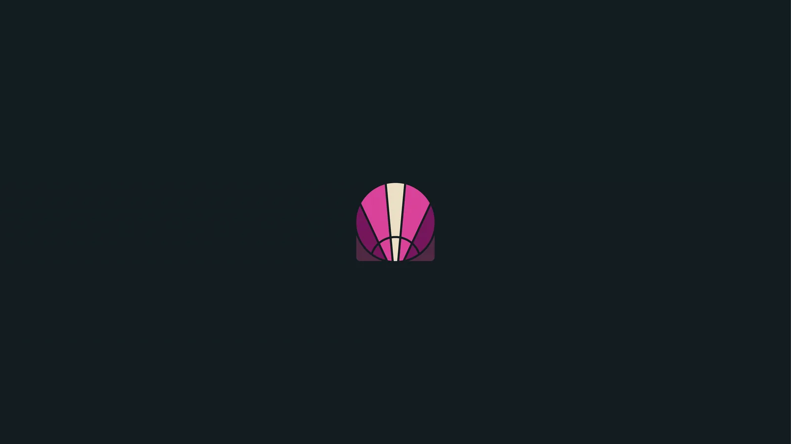
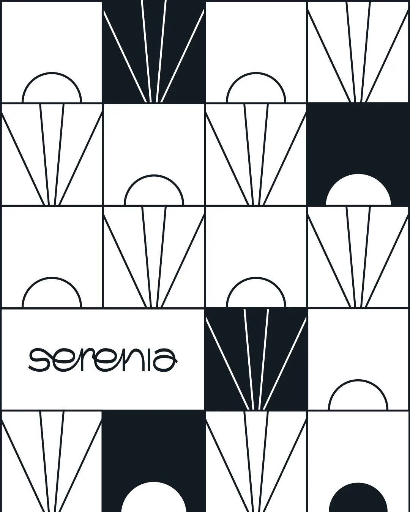
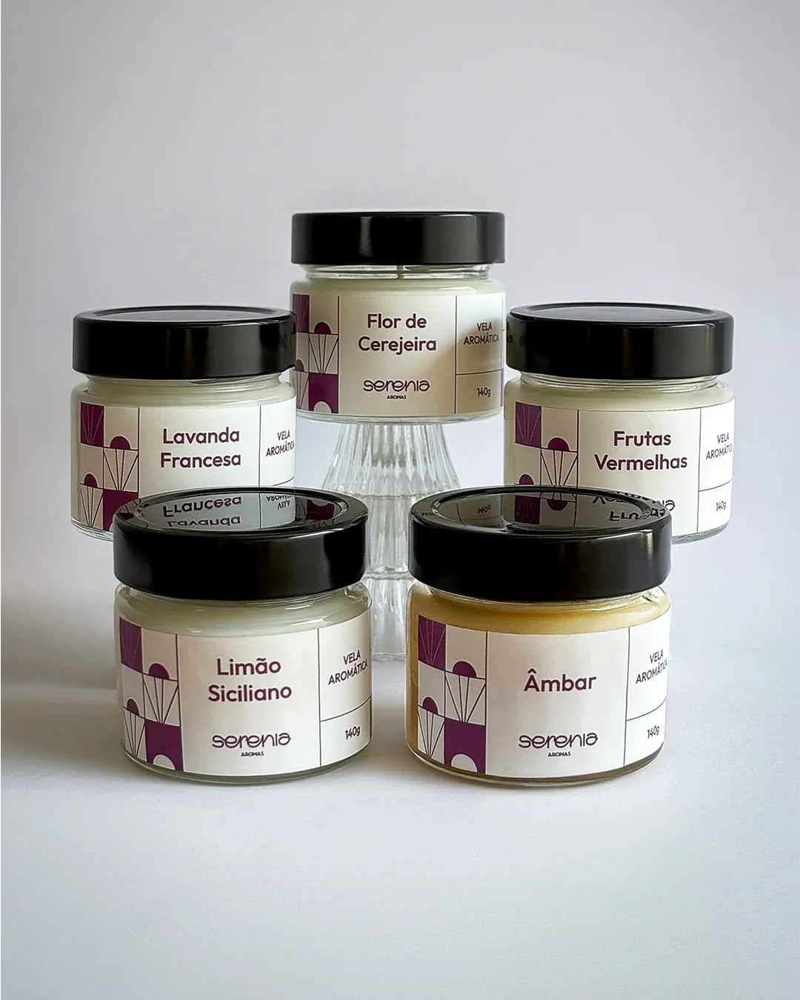
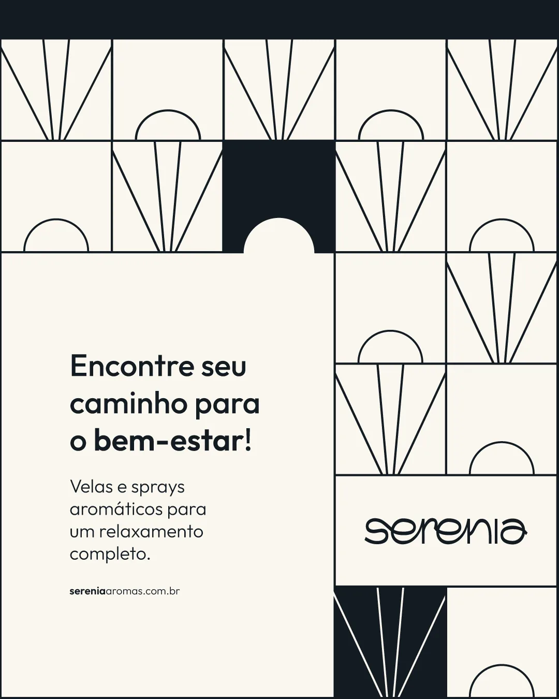
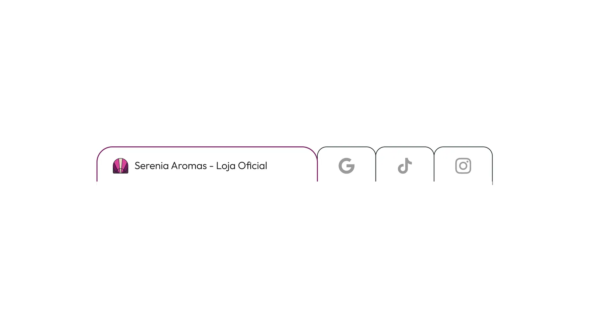
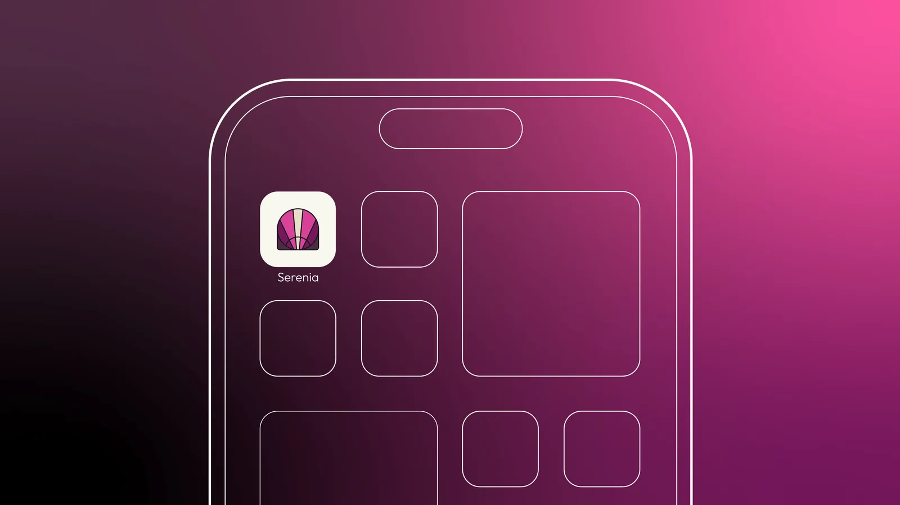

Lopes ARQ

A Serenia Aromas é uma marca de velas aromáticas e perfumes para casa que convida os clientes a uma experiência sensorial única, onde cada fragrância é uma porta para um universo de tranquilidade e reflexão. Inspirada nos conceitos de portais, mosaicos e a luz do sol, a identidade visual da Serenia evoca a ideia de atravessar um limiar para um estado de serenidade e bem-estar. Para o logotipo, trabalhamos com linhas finas e formas geométricas que simbolizam um portal, enquanto a paleta de cores combina tons profundos e suaves para representar elegância e introspecção. A tipografia mistura modernidade e fluidez, refletindo o espírito de leveza e harmonia da marca. Cada vela e perfume não apenas complementa um ambiente, mas também transforma o espaço, criando um refúgio sensorial que permite ao usuário imergir em diferentes universos emocionais.










